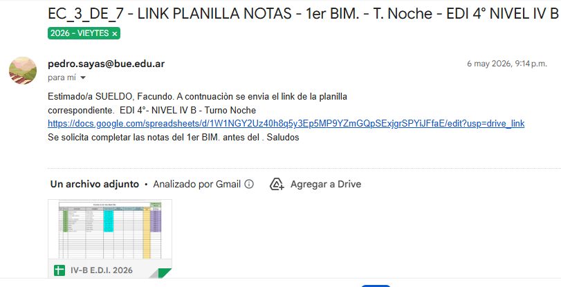
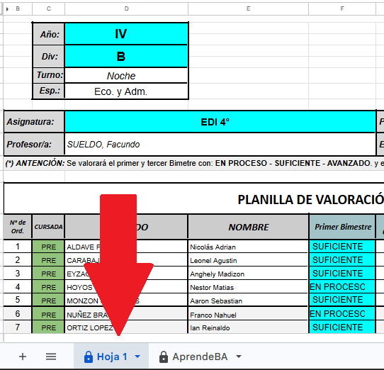
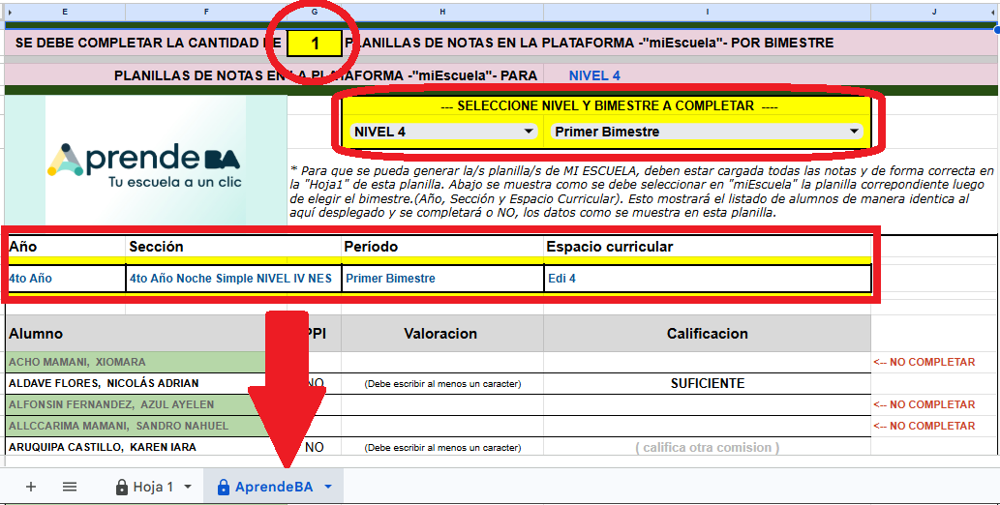
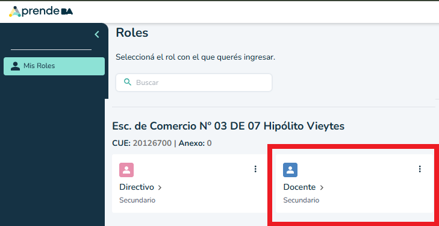
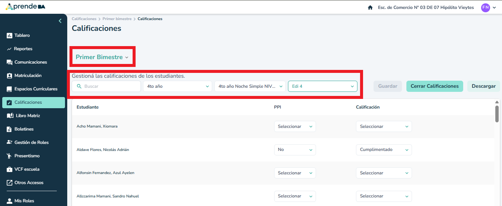
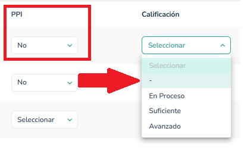

La carga de notas se hace en dos lugares, y los dos son necesarios:
Importante: completar la planilla de Drive NO carga las notas en la plataforma Aprende BA. La carga en la plataforma es manual. La planilla es una guía para hacerla sin errores.
Para cargar notas en la plataforma necesita tener los roles correspondientes. Si todavía no los tiene, siga primero el tutorial Gestión de Roles.
Abra el enlace a la planilla enviado por correo electrónico.
Busque el asunto: LINK PLANILLA NOTAS

Toque la imagen para ampliarla
Complete las calificaciones en la pestaña "Hoja 1" según corresponda al período del año.
ATENCIÓN: Lógica de carga según bimestre
Importante: Todos los alumnos deben estar cargados con nota para que se generen correctamente los datos en la pestaña "AprendeBA".

Toque la imagen para ampliarla
Abra la pestaña "AprendeBA".
Si tiene más de una planilla: haga la carga completa (pasos 4 a 10) para un nivel, y después repítala eligiendo el siguiente nivel en el recuadro amarillo.

Toque la imagen para ampliarla
La lista de alumnos de esta pestaña aparece en el mismo orden que en la plataforma. Cada fila le indica qué hacer:
Al iniciar sesión, seleccione el recuadro: Docente > Secundario.
Si no aparece ese rol, siga el tutorial Gestión de Roles.

Toque la imagen para ampliarla
Una vez dentro de la plataforma, diríjase al menú lateral izquierdo y haga clic en la sección Calificaciones (resaltada en verde).
Toque la imagen para ampliarla
Copie en los filtros de la plataforma exactamente los datos que muestra la pestaña "AprendeBA" en la fila Año / Sección / Período / Espacio curricular:

Toque la imagen para ampliarla
Cargue solamente las notas de los alumnos que tienen datos en la pestaña "AprendeBA" y no asigne notas a alumnos que no le correspondan (filas marcadas con "NO COMPLETAR" o "califica otra comision"). Utilice siempre esa pestaña como referencia.

Toque la imagen para ampliarla
En caso de calificar por error a un alumno que no corresponde, poner No en PPI y elegir el guion (-) del menú desplegable de Calificación para permitir el guardado y cierre de la planilla.
¿Tiene más planillas? Vuelva al paso 4, elija el siguiente nivel en el recuadro amarillo de la pestaña "AprendeBA" y repita la carga.